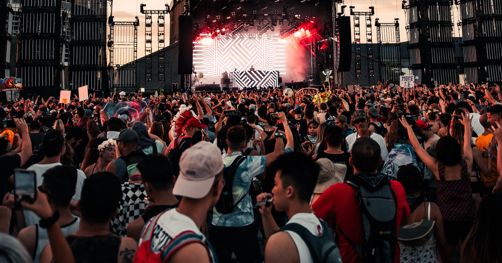

About FVC^2K^2
FVC^2K^2 is a music festival that is held in New York. Being known as one of the most significant public gardens in New York City, the conservatory gardens has alot of history behind it. Consisting of 6 acres, filled with flowers and beautiful architecture, it is the ideal venue for FVC^2K^2 to be held with numerous places to sit, dance, walk around and even hold a picnic while enjoying the music.